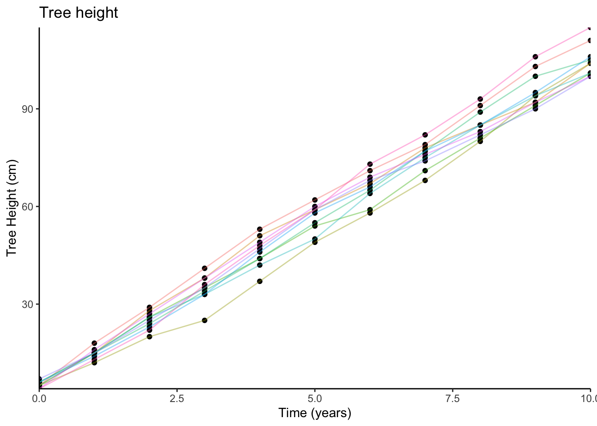

Types of relationships
1 Functions
You have seen by now how to visualise the distribution of a variable, and how to visualise a relationship between two variables. Relationships between two variables can look very different, and can follow different patterns. These patterns can be expressed mathematically in the form of functions.
Functions
A function is a mapping between two sets of numbers (\(x\) and \(y\)) - associating every element of \(x\) with an element in \(y\).
We often denote functions using the letter \(f\), in that we state that \(y = f(x)\) (“y equals f of x”).
For example, there is a mapping between these two sets:
\[x=\begin{bmatrix} 1 \\ 2 \\ 3 \\ 4 \\ 5 \\ 6 \\ 7 \\ 8 \\ \end{bmatrix}, \qquad y=\begin{bmatrix} 3 \\ 4 \\ 5 \\ 6 \\ 7 \\ 8 \\ 9 \\ 10 \\ \end{bmatrix}\]
And we can write this mapping as:
\[f(x) = x + 2\]
And we could visualise this relationship between \(x\) and \(y\):
Linear functions
In statistics, we often attempt to summarise the pattern that is present in the data using linear functions.
Imagine that we plant 10 trees, and measure their heights each year for 10 years. We could visualise this data (the relationship between time and tree height) on a scatterplot (we have added some lines to the plot to show which tree is which):

We might sensibly choose to describe this pattern as a line:

And in order to describe a line like this, we require two things:
- The starting point (i.e., where it crosses the y-axis)
- The amount it goes up every year.
When we planted the trees (at year 0), they were on average about 5cm tall. So this is where our line starts.
For every year, the trees grew by about 10cm on average. So we can now describe tree height as a function of time:
\[\textrm{Tree height} = 5 + (10 \times \textrm{Years})\]
We can write this in terms of \(x\) and \(y\):
- \(y = f(x)\) “\(y\) is some function \(f\) of \(x\)”
- \(f(x) = 5 + 10x\) “the function \(f\) maps each value \(x_i\) to \(5 + (10 \times x_i)\)”
Non-linear functions
Functions don’t have to be linear. Often, we might want to describe relationships which appear to be more complex than a straight line.
For example, it is often suggested that for difficult tasks, some amount of stress may improve performance (but not too little or too much). We might think of the relationship between performance and stress as a curve (Figure 1).

One way to describe curves is to use polynomials (\(x^2\), \(x^3\), etc.).
For example, in the following two sets, \(y\) can be described as \(f(x)\) where \(f(x)=x^2\):
\[x=\begin{bmatrix} -5 \\ -4 \\ -3 \\ -2 \\ -1 \\ 0 \\ 1 \\ 2 \\ 3 \\ 4 \\ 5 \end{bmatrix}, \qquad y=\begin{bmatrix} 25 \\ 16 \\ 9 \\ 4 \\ 1 \\ 0 \\ 1 \\ 4 \\ 9 \\ 16 \\ 25 \end{bmatrix}\]
and when we plot each value of \(x\) against the corresponding value of \(y\):

The code to create the above plot
# the tibble() function can be used to create a dataframe
# here, we create one with two variables, x and y.
# x is the sequence from -5 to 5,
# y is equal to x squared.
# we save this data as "poly"
poly <-
tibble(
x = c(-5,-4,-3,-2,-1,0,1,2,3,4,5),
y = x^2
)
# create a plot with "poly", with variable "x" on the x-axis,
# and variable "y" on the y-axis. Add geom_points for each entry
ggplot(data = poly, aes(x = x, y = y)) +
geom_point()2 Transformations
We have seen previously how we might change all the values in a variable, for instance if we want to turn heights from centimetres to metres:
# read in the starwars dataset and assign it the name "starwars2"
starwars2 <- read_csv("https://uoepsy.github.io/data/starwars2.csv")
# take the starwars2 dataframe |>
# mutate it such that there is a new variable called "height_m",
# the values of which are equal to the "height" variable divided by 100.
# then, select only the "height" and "height_m" columns (this is just
# to make it easier to see without all the other variables)
starwars2 |>
mutate(
height_m = height/100
) |>
select(height, height_m)# A tibble: 75 × 2
height height_m
<dbl> <dbl>
1 172 1.72
2 167 1.67
3 96 0.96
4 202 2.02
5 150 1.5
6 178 1.78
7 165 1.65
8 97 0.97
9 183 1.83
10 182 1.82
# ℹ 65 more rowsWhat we have done here, can be described as a transformation, in that we have applied a mathematical function to the values in the height variable.
Transformation
Data transformation is when we apply a deterministic function to map each value of a variable to a transformed value.
We transform for various reasons. For instance, we can use it to change the units we are interpreting (e.g., cm to m), or to change the shape of a distribution (e.g., make it less skewed).
We could even plot the heights in cm and heights in m against one another (note what units are on each axis):

The relationship between a variable and a transformed variable need be linear, for example, log transformation:

2.1 A recap of Logarithms and Natural Logarithms
Logarithm
A logarithm (log) is the power to which a number must be raised in order to get some other number.
Take as examples \(10^2\) and \(10^3\):
\[ 10^2 = 100 \quad \Longleftrightarrow \quad \log_{10} (100) = 2 \]
\[ 10^3 = 1000 \quad \Longleftrightarrow \quad \log_{10} (1000) = 3 \]
We refer to \(\log_{10}\) as “Log base 10”.
Natural log
A special case of the logarithm is referred to as the natural logarithm, and is denoted by \(ln\) or \(log_e\), where \(e = 2.718281828459...\)
\(e\) is a special number for which \(log_e(e) = 1\).
In R, this is just the log() function, which uses the base \(e\) by default.
3 Centering and Standardisation
Recall our dataset from our introduction to handling numerical data, in which we had data on 120 participants’ IQ scores (measured on the Wechsler Adult Intelligence Scale, WAIS), their ages, and their scores on 2 other tests. We know how to calculate the mean and standard deviation of the IQ scores:
# read in the data
wechsler <- read_csv("https://uoepsy.github.io/data/wechsler.csv")
# calculate the mean and sd of IQs
wechsler |>
summarise(
mean_iq = mean(iq),
sd_iq = sd(iq)
)# A tibble: 1 × 2
mean_iq sd_iq
<dbl> <dbl>
1 99.3 15.4Two very useful transformations we can apply to a variable are centering and standardisation.
-
Centering A transformation which re-expresses each value as the distance from a given number (e.g., the mean).
- Standardising A transformation which re-expresses each value as the distance from the mean in units of standard deviations.
Mean-centering
To Mean-center a variable, we simply subtract the mean from each value, \(x_i - \bar{x}\): \[ \textrm{raw IQ} = \begin{bmatrix} 71 \\ 103 \\ 74 \\ 108 \\ 118 \\ 129 \\ ... \end{bmatrix}, \qquad \textrm{mean centered IQ} = \begin{bmatrix} 71-99.3 \\ 103-99.3 \\ 74-99.3 \\ 108-99.3 \\ 118-99.3 \\ 129-99.3 \\ ... \end{bmatrix} = \begin{bmatrix} -28.3 \\ 3.7 \\ -25.3 \\ 8.7 \\ 18.7 \\ 29.7 \\ ... \end{bmatrix} \]
To mean-center in R, we can simply add a new variable using mutate() and subtract the mean IQ from the IQ variable:
# Take the "wechsler" dataframe, and mutate it,
# such that there is a variable called "iq_meancenter" for which
# the entries are equal to the "iq" variable entries minus the
# mean of the "iq" variable
wechsler |>
mutate(
iq_meancenter = iq - mean(iq)
)# A tibble: 120 × 6
participant iq age test1 test2 iq_meancenter
<chr> <dbl> <dbl> <dbl> <dbl> <dbl>
1 ppt_1 71 27 46 50 -28.3
2 ppt_2 103 38 42 29 3.67
3 ppt_3 74 20 50 77 -25.3
4 ppt_4 108 46 50 62 8.67
5 ppt_5 118 45 60 29 18.7
6 ppt_6 129 33 45 45 29.7
7 ppt_7 103 49 42 41 3.67
8 ppt_8 120 27 63 33 20.7
9 ppt_9 96 37 53 44 -3.33
10 ppt_10 80 26 53 21 -19.3
# ℹ 110 more rowsStandardisation
When we standardise a variable, we call the transformed values z-scores. To transform a given value \(x_i\) into a z-score, we simply calculate the distance from \(x_i\) to the mean, \(\bar{x}\), and divide this by the standard deviation, \(s\)
\[ z_i = \frac{x_i - \bar{x}}{s} \]
So for each of the raw IQ scores, we can transform them to z-scores by subtracting the mean and then dividing by the standard deviation. The resulting values tell us how low/high each participant’s IQ score is compared to observed distribution of scores:
\[
\textrm{raw IQ} = \begin{bmatrix} 71 \\ 103 \\ 74 \\ 108 \\ 118 \\ 129 \\ ... \end{bmatrix}, \qquad
\textrm{standardised IQ} = \begin{bmatrix} \frac{71-99.3}{15.43} \\ \frac{103-99.3}{15.43} \\ \frac{74-99.3}{15.43} \\ \frac{108-99.3}{15.43} \\ \frac{118-99.3}{15.43} \\ \frac{129-99.3}{15.43} \\ ... \end{bmatrix} = \begin{bmatrix} -1.84 \\ 0.238 \\ -1.64 \\ 0.562 \\ 1.21 \\ 1.92 \\ ... \end{bmatrix}
\]
We can achieve this in R either by manually performing the calculation:
# Take the "wechsler" dataframe, and mutate it,
# such that there is a variable called "iq_z" for which
# the entries are equal to the "iq" variable entries minus the mean of the "iq"
# variable, divided by the standard deviation of the "iq" variable.
wechsler |>
mutate(
iq_z = (iq - mean(iq)) / sd(iq)
)# A tibble: 120 × 6
participant iq age test1 test2 iq_z
<chr> <dbl> <dbl> <dbl> <dbl> <dbl>
1 ppt_1 71 27 46 50 -1.84
2 ppt_2 103 38 42 29 0.238
3 ppt_3 74 20 50 77 -1.64
4 ppt_4 108 46 50 62 0.562
5 ppt_5 118 45 60 29 1.21
6 ppt_6 129 33 45 45 1.92
7 ppt_7 103 49 42 41 0.238
8 ppt_8 120 27 63 33 1.34
9 ppt_9 96 37 53 44 -0.216
10 ppt_10 80 26 53 21 -1.25
# ℹ 110 more rowsOr we can use the scale() function:
# Take the "wechsler" dataframe, and mutate it,
# such that there is a variable called "iq_std" for which
# the entries are equal to the scaled values of the "iq" variable.
wechsler |>
mutate(
iq_std = scale(iq)
)# A tibble: 120 × 6
participant iq age test1 test2 iq_std[,1]
<chr> <dbl> <dbl> <dbl> <dbl> <dbl>
1 ppt_1 71 27 46 50 -1.84
2 ppt_2 103 38 42 29 0.238
3 ppt_3 74 20 50 77 -1.64
4 ppt_4 108 46 50 62 0.562
5 ppt_5 118 45 60 29 1.21
6 ppt_6 129 33 45 45 1.92
7 ppt_7 103 49 42 41 0.238
8 ppt_8 120 27 63 33 1.34
9 ppt_9 96 37 53 44 -0.216
10 ppt_10 80 26 53 21 -1.25
# ℹ 110 more rowsWe can also use the scale() function to mean-center a variable, by setting scale(variable, center = TRUE, scale = FALSE):
# create two new variables in the "wechsler" dataframe, one which is
# mean centered iq, and one which is standardised iq:
wechsler |>
mutate(
iq_mc = scale(iq, center = TRUE, scale = FALSE),
iq_std = scale(iq, center = TRUE, scale = TRUE) # these are the default settings
)# A tibble: 120 × 7
participant iq age test1 test2 iq_mc[,1] iq_std[,1]
<chr> <dbl> <dbl> <dbl> <dbl> <dbl> <dbl>
1 ppt_1 71 27 46 50 -28.3 -1.84
2 ppt_2 103 38 42 29 3.67 0.238
3 ppt_3 74 20 50 77 -25.3 -1.64
4 ppt_4 108 46 50 62 8.67 0.562
5 ppt_5 118 45 60 29 18.7 1.21
6 ppt_6 129 33 45 45 29.7 1.92
7 ppt_7 103 49 42 41 3.67 0.238
8 ppt_8 120 27 63 33 20.7 1.34
9 ppt_9 96 37 53 44 -3.33 -0.216
10 ppt_10 80 26 53 21 -19.3 -1.25
# ℹ 110 more rows3.1 Test norms
Many neuropsychological tests will have norms - parameters which describe the distribution of scores on the test in a normal population. For instance, in a normal adult population, scores on the WAIS have a mean of 100 and a standard deviation of 15.
What this means is that rather than calculating a standardised score against the observed mean of our sample, we might calculate a standardised score against the test norms. In the formula for \(z\), we replace our sample mean \(\bar{x}\) with the population mean \(\mu\), and the sample standard deviation \(s\) with the population standard deviation \(\sigma\):
\[
z = \frac{x - \mu}{\sigma}
\]
The resulting values tell us how low/high each participant’s IQ score is compared to the distribution of IQ scores in the population.
4 Glossary
-
Function: A mapping between two sets of numbers, associating every element of the first set with an elemet in the second.
- Transformation: Applying a function to a variable to map each value to a transformed value.
- Logarithm: The power to which a number must be raised in order to get some other number.
-
Centering: Transformation which re-expresses each value as the distance from a given number (e.g., the mean).
-
Standardisation: Transformation which re-expresses each value as the distance from the mean in units of standard deviations.
-
scale()To mean center or standardise a variable (depending upon whethercenter=TRUE/FALSEandscale=TRUE/FALSE).